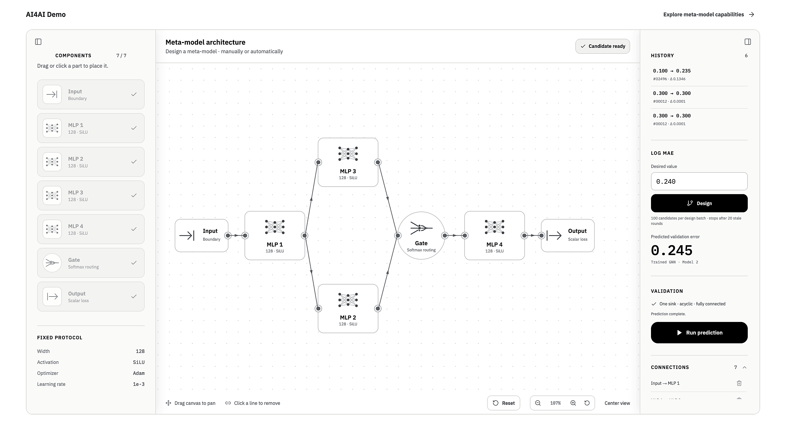

I am Bangzhe Huang (黄邦哲), a research intern in Prof. Ziming Liu's
group at the College of AI, Tsinghua University, and an incoming
undergraduate in physics at Fudan University. I have also conducted
research with Prof. Jing Wang at Fudan University and Prof. Zi Cai at
Shanghai Jiao Tong University.
My research has developed from many-body physics and learning across
heterogeneous scientific tasks to evaluating open-ended research agents
and building controlled AI4AI systems. I am interested in models that
learn how research states, actions, and architectures translate into
future outcomes, and in using those models to improve scientific
discovery. I am open to collaborations on automated research, research
world models, AI4AI, and machine learning for science.
Email
/
CV
/
Github
/
AI4AI Demo
Selected Research
-

AI4AI: Learning to Design a Meta-model
Can a learned model predict which architecture will train well,
then use those predictions to design another model? I built a
controlled pilot over a DSL of four MLP blocks and one softmax
gate. Candidate DAGs are trained on fixed regression tasks, while
a graph meta-model predicts test log-MAE and supports manual or
automatic architecture design. Preliminary experiments surface a
ResNet-like design.
Independent research · Active pilot
Demo
·
Code
-
Physics-Informed Many-Body Foundation Models: Scalable
Optimization across Heterogeneous Tasks
Scaling one monolithic model across heterogeneous Hamiltonian
families can make optimization ill-conditioned. I proposed a
task-modular architecture that preserves family-specific physical
priors and ansatzes while learning high-level representations for
cross-task composition. I lead the problem formulation, method,
PyTorch implementation, and experimental evaluation.
Project lead · Advisor: Prof. Jing Wang, Fudan University ·
Preprint in preparation
-
Open-Ended Scientific Research Benchmark for Physics Research Agents
How can open-ended physics research agents be evaluated without
prescribing a single valid trajectory? I designed benchmark tasks
whose ground truth is a low-dimensional physical structure and
equivalent observables, while agents may reach it through
multi-round simulation, observation, and feedback. A pilot tests
the full loop from experimental design and code execution to a
final physical audit.
Independent research · Academic discussion with Prof. Siheng Chen,
Shanghai Jiao Tong University · Pilot completed
-
Phase Transport and Defect Dynamics in Nonreciprocal Spin Systems
Using Monte Carlo simulations of two-dimensional nonreciprocal
spin systems, I study the microscopic origin of macroscopic
oscillation and defect-mediated phase transport. The analysis
relates oscillation frequency to domain-wall density through
ω = ρveff and tests
two transport regimes across lattices and bond disorder.
Lead researcher · Advisor: Prof. Zi Cai, Shanghai Jiao Tong
University
Experience
College of AI, Tsinghua University
Research Intern in Prof. Ziming Liu's group
Current
Department of Physics, Fudan University
Incoming undergraduate in Physics
Starting September 2026